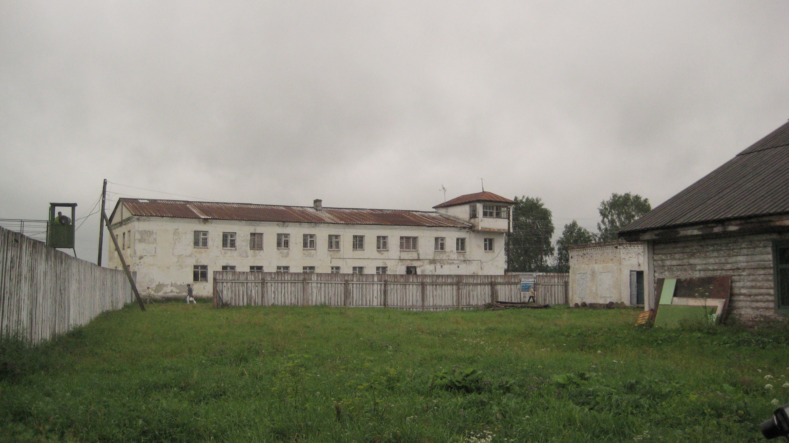

Повернення Василя Стуса до Києва у серпні 1979 року після відбуття першого терміну покарання та заслання не означало примирення з системою. Знаючи, що репресивна машина пильно стежить за кожним його кроком, він одразу приєднався до Української Гельсінської групи. Цей крок був свідомим переходом межі; Стус розумів, що захист прав людини в умовах тоталітаризму є прямою антиурядовою діяльністю, за яку доведеться платити свободою або життям. У травні 1980 року його було знову заарештовано.
Осінній судовий процес 1980 року увійшов в історію як класичний приклад інституційної деградації радянського правосуддя. Суд над Василем Стусом був не змагальним процесом встановлення істини, а ритуальною розправою, де суддя, прокурор, слідчий КДБ і призначений державою адвокат діяли як єдиний, узгоджений механізм ліквідації політичного опонента.
Стуса звинуватили в "антирадянській агітації та пропаганді", визнавши його дії такими, що полягали у виготовленні, зберіганні та розповсюдженні "ворожої літератури, що ганьбить радянський державний і суспільний лад" з метою "підриву та ослаблення радянської влади". Абсурдність ситуації полягала в тому, що головним доказом "злочинної діяльності" слугували поетичні твори Стуса. Система відкрито визнала, що література є для неї загрозою національної безпеки.
"другий прокурор мені у цій справі не потрібен"
Окремого, детального аналізу потребує роль адвоката в цьому процесі. Відповідно до матеріалів архівної кримінальної справи, державним захисником Стуса був призначений молодий юрист Віктор Медведчук. На той час до політичних справ допускалася лише вузька група адвокатів, які мали відповідний дозвіл органів державної безпеки і діяли в чітко визначених межах лояльності до системи. Проте навіть у цих жорстких координатах поведінка Медведчука стала символом безпрецедентного порушення адвокатської етики та фактичної колаборації з обвинуваченням.
| Принципи незалежної адвокатури | Фактичні дії В. Медведчука під час процесу 1980 року |
|---|---|
| Презумпція невинуватості: Адвокат зобов'язаний відкидати обвинувачення до винесення вироку і шукати докази на користь клієнта. |
Згода з обвинуваченням: Визнав правильність кваліфікації дій Стуса слідчими органами КДБ. |
| Захист інтересів клієнта: Позиція захисника не може суперечити позиції підсудного. |
Солідаризація з прокурором: Заявив, що інкриміновані Стусу "злочини" заслуговують на покарання. |
| Повага до волі підзахисного: У разі відмови клієнта від послуг, адвокат повинен підтримати це клопотання. |
Ігнорування волі клієнта: Залишився у процесі попри категоричну заяву Стуса ("другий прокурор мені не потрібен"). |
| Інформаційна підтримка: Адвокат забезпечує зв'язок підзахисного з родиною та інформує про хід справи. |
Приховування інформації: Не повідомив родині поета про дату початку розгляду справи в суді. |

Василь Стус миттєво збагнув природу цього "захисту". Усвідомлюючи, що присутність Медведчука лише легітимізує судовий фарс, дисидент категорично відмовився від його послуг. Він вимагав надати йому право на захист з боку представника міжнародної правозахисної організації. Проте радянський суд, керуючись власними інструкціями, відхилив це клопотання і примусово залишив Медведчука в процесі. Злочин Медведчука перед підзахисним виявився не лише в юридичній площині, але й у моральній: він навіть не повідомив родині поета про дату початку судового розгляду, позбавивши їх можливості підтримати Василя.
Попередня практика цього адвоката свідчила, що випадок зі Стусом не був аномалією. У 1979 році Медведчук захищав іншого українського дисидента, Юрія Литвина, який також отримав максимальне покарання і залишив свідчення, що дії його адвоката були диктовані вказівками "згори". Обидва дисиденти згодом зустріли свою смерть у таборах.
10 років таборів особливого режиму
+ 5 років заслання
Табір ВС-389/36, с. Кучино, Пермська область
Вирок суду був жорстоким: 10 років таборів особливого режиму та 5 років заслання. Василя Стуса відправили до табору ВС-389/36 у селі Кучино Пермської області. Цей заклад був розрахований на методичне фізичне та психологічне знищення політичних в'язнів: їм забороняли бачитися з родинами, обмежували листування, постійно кидали до холодного карцеру. Навіть у цих умовах Стус намагався займатися вихованням сина через листи, закликаючи його формувати характер і бути стійким.
Протестна воля Стуса не була зламлена. У серпні 1985 року, реагуючи на чергові знущання адміністрації табору, він оголосив сухе голодування. У ніч з 3 на 4 вересня 1985 року Василь Стус загинув у карцері.
Обставини його смерті залишаються до кінця не з'ясованими: чи це був серцевий напад, спровокований виснаженням і холодом (температура в карцері ледь сягала 15 градусів), чи пряме фізичне вбивство наглядачами. Хай там як, це була спланована ліквідація найпотужнішого інтелектуального голосу українського опору, здійснена напередодні колапсу самої імперії.
| Останні дні Василя Стуса | |
|---|---|
| Серпень 1985 | Оголошення сухого голодування у відповідь на знущання адміністрації табору |
| 3 вересня 1985 | Перебування у холодному карцері. Температура близько 15°C |
| Ніч 3-4 вересня 1985 | Смерть у карцері. Обставини остаточно не встановлені |
| Після смерті | Тіло видане родині. Поховання на Байковому кладовищі у Києві |